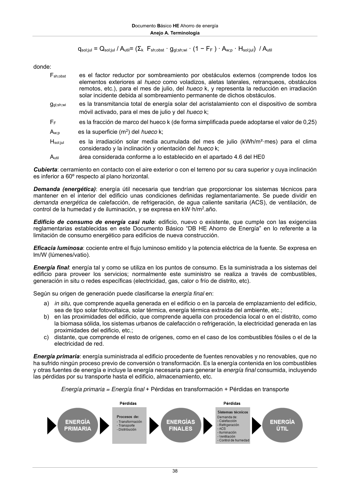

DB-HE · Anejo A. Terminología · versión 2022-06-14
SHA256: 7f890bd495552e979f83f72c5f5c7b642e745911a8e343a7b5b73023ce0e1f05 · página física 38 de 56 · métodos de encabezado
solo si están cotejados.
Formatos: Markdown · JSON de bloques · PDF p. 38 · imagen PNG
Documento Básico HE Ahorro de energía
Anejo A. Terminología
38
qsol;jul = Qsol;jul / Autil= (Σk Fsh;obst · ggl;sh;wi · (1 − FF ) · Aw;p · Hsol;jul) / Autil
donde:
Fsh;obst
es el factor reductor por sombreamiento por obstáculos externos (comprende todos los
elementos exteriores al hueco como voladizos, aletas laterales, retranqueos, obstáculos
remotos, etc.), para el mes de julio, del hueco k, y representa la reducción en irradiación
solar incidente debida al sombreamiento permanente de dichos obstáculos.
ggl;sh;wi
es la transmitancia total de energía solar del acristalamiento con el dispositivo de sombra
móvil activado, para el mes de julio y del hueco k;
FF
es la fracción de marco del hueco k (de forma simplificada puede adoptarse el valor de 0,25)
Aw;p
es la superficie (m2) del hueco k;
Hsol;jul
es la irradiación solar media acumulada del mes de julio (kWh/m²·mes) para el clima
considerado y la inclinación y orientación del hueco k;
Autil
área considerada conforme a lo establecido en el apartado 4.6 del HE0
Cubierta: cerramiento en contacto con el aire exterior o con el terreno por su cara superior y cuya inclinación
es inferior a 60º respecto al plano horizontal.
Demanda (energética): energía útil necesaria que tendrían que proporcionar los sistemas técnicos para
mantener en el interior del edificio unas condiciones definidas reglamentariamente. Se puede dividir en
demanda energética de calefacción, de refrigeración, de agua caliente sanitaria (ACS), de ventilación, de
control de la humedad y de iluminación, y se expresa en kW·h/m2.año.
Edificio de consumo de energía casi nulo: edificio, nuevo o existente, que cumple con las exigencias
reglamentarias establecidas en este Documento Básico “DB HE Ahorro de Energía” en lo referente a la
limitación de consumo energético para edificios de nueva construcción.
Eficacia luminosa: cociente entre el flujo luminoso emitido y la potencia eléctrica de la fuente. Se expresa en
lm/W (lúmenes/vatio).
Energía final: energía tal y como se utiliza en los puntos de consumo. Es la suministrada a los sistemas del
edificio para proveer los servicios; normalmente este suministro se realiza a través de combustibles,
generación in situ o redes específicas (electricidad, gas, calor o frío de distrito, etc).
Según su origen de generación puede clasificarse la energía final en:
a) in situ, que comprende aquella generada en el edificio o en la parcela de emplazamiento del edificio,
sea de tipo solar fotovoltaica, solar térmica, energía térmica extraída del ambiente, etc.;
b) en las proximidades del edificio, que comprende aquella con procedencia local o en el distrito, como
la biomasa sólida, los sistemas urbanos de calefacción o refrigeración, la electricidad generada en las
proximidades del edificio, etc.;
c) distante, que comprende el resto de orígenes, como en el caso de los combustibles fósiles o el de la
electricidad de red.
Energía primaria: energía suministrada al edificio procedente de fuentes renovables y no renovables, que no
ha sufrido ningún proceso previo de conversión o transformación. Es la energía contenida en los combustibles
y otras fuentes de energía e incluye la energía necesaria para generar la energía final consumida, incluyendo
las pérdidas por su transporte hasta el edificio, almacenamiento, etc.
Energía primaria = Energía final + Pérdidas en transformación + Pérdidas en transporte
